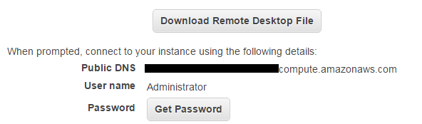
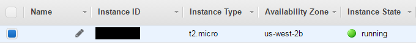

Create EC2 Instance on Amazon
Today we will talk about how to create EC2 windows instance on Amazon Web Services. EC2 instance is Virtual Machine which you get from Amazon. EC2 can be free or paid. Free instance have some limitations. But yes, it does meet your requirements if you are in development phase. So let’s have a look how we can create an EC2 instance at Amazon.
Steps for creating EC2 windows instance:
- Visit Amazon Web Service home page (https://aws.amazon.com).
- At top left corner your will find “Sign In to the Console” button. Click on it. Here you will be redirected to login page.
- If you are an existing user of AWS, login with your credentials. Or, sign up for AWS.
- If you are signing up as a new user then you will asked for your credit card details. But, don’t worry they won’t charge you unnecessarily. This is just for verification of authentic user. It’s part of Amazon’s policy. This check is to ensure that we are genuine user and so that they can provide us better service. And yes, we can trust Amazon.
- Now, we at the home page of AWS. Here we can see all the services provided by AWS. For now, we will look only at EC2 instance. We will get into others later.
- In compute section you will see “EC2”. Click there.
- We are at “EC2” dashboard now. You should see a Blue button saying “Launch Instance” under Create Instance. Click on the button.
- Now we can see the list of virtual servers which we can select from. Scroll down the list, you should see “Microsoft Windows Server 2012 R2 Base”. Click on the “Select” button.
- Here AWS will ask us for Instance type. Already “t2.micro” will be selected, this is free tier eligible. Don’t make any changes here.
- You will find a button saying “Review and Launch”. From here we can directly launch the instance. But, we will look at other tabs just for information.
- “Configure Instance”. Here you will find the network details, basic details and behavior of the VM which we are supposed to create. Let’s not make any changes here.
- “Add Storage”. This tab allows us to add more storage to our machine. In free tier we are eligible for 30 GB storage. If we increase the storage we would be billed extra. So again let’s not make any changes here.
- “Tag Instance”. Tagging is done in order to categories our instances. Here we have to provide key-value pair on which the instance should be identified. I would suggest you should tag your instance.
- “Configure Security Group”. Here we can add certain rules for our firewall. For example, if you want to open certain ports on our machine, then you can open them from here. By default we have security group provided by AWS. If you don’t want that, then you create a new once. But ,I will suggest don’t create a new one. Let’s rely on AWS for this.
- Here we go. Click on “Review and Launch”. We will be redirected to a page where you will find all the details of the instance which we are supposed to launch.
- Click On “Launch”. A pop up will come and will ask you for a key-value pair. This key value pair is used to generate credentials which we have to use while connecting to our virtual machine.
- Select “Create a new key pair”.
- Enter key pair name. You can enter any name you want.
- Click on “Download Key Pair”
- Click on “Launch Instance”.

- Now you must be looking at page with heading “Launch Status”. This will show the status of our instance.
- In right bottom corner you will see “View Instances”.
- Here you will see the list of your instances. Select the one which we just created.
- In the second half of page you will see all the details related to the instance we just created.
- It’s time to connect to our new instance. Select the instance we just created and click on “Connect”.
- A pop up will come up . Here you will see the option for “Download Remote Desktop File” and “Get Password”.

- We will first get our password.
- Click on “Get Password”.
- Now here we have to upload the “.pem” file which we got after creating key pair.
- Click on “choose file” and traverse to the path where you have stored that file. (Note: store this file properly, this is really important. This help us to get the password to connect to our instance).
- Now your file is uploaded. You should see some weird text in the text box, right? This is our Encrypted password.
- Click on “Decrypt Password”.
- You have got the password now to connect to our machine.
- Store it properly, or learn it. I know its bit hard to learn. But we will have to.
- Now you should see the details to connect to your Instance. You can use this to connect. Or else, download the Remote Desktop File.
- I would suggest download the file.
- Click on “Download Remote Desktop File”. You got the file, right?
- Now click on the file which we just downloaded. A pop up will come asking for connection to the server. Let’s click Connect.
- Now enter your credentials and get connected to the Virtual Machine which we just created.

Reference : Amazon Webservices Docs
If you find this article important, Do share.
If you find any difficulties or suggestions let me know on below links.